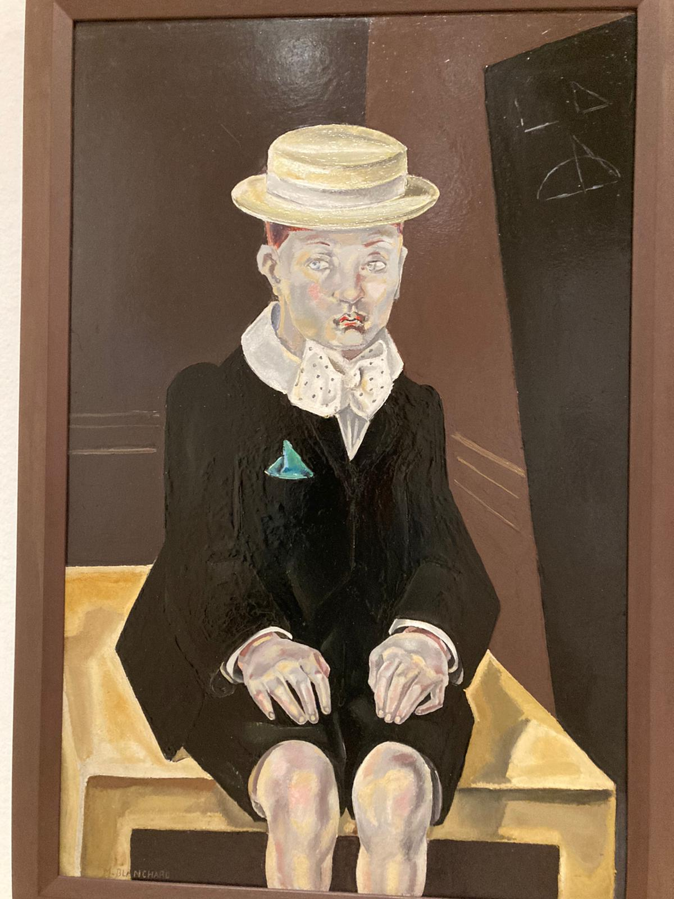
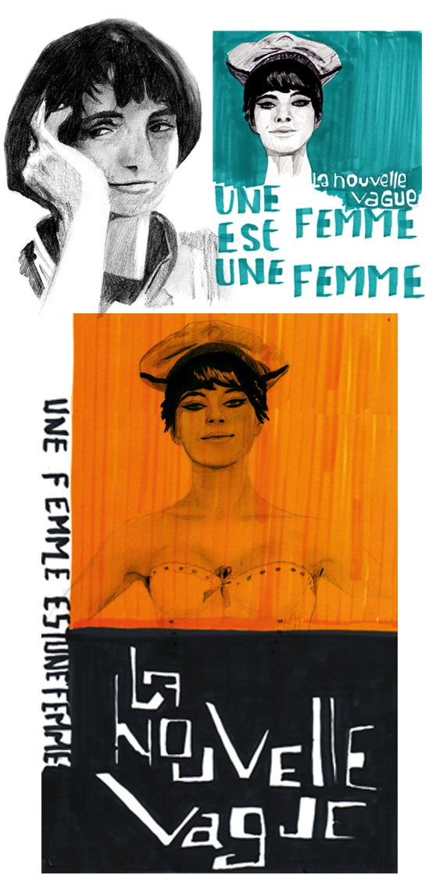
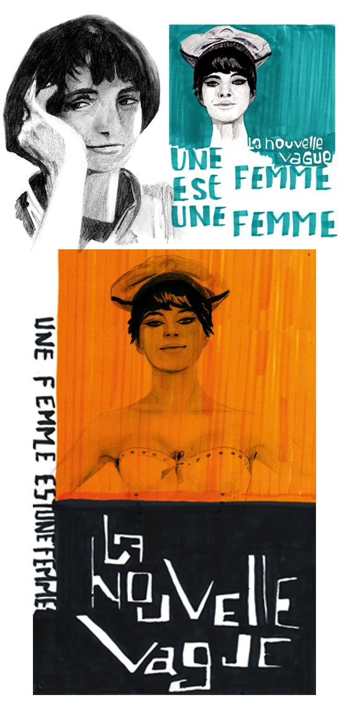

ajam
por tu cumpleaños quería solamente hacer algo diferente
Una canción que me recuerda a tihace un año bby
im really freaking happy d'etre ton amie


Actually Saro, I just want to remecier la vie pour ta vie. Je ne sais pas comme
est ce que tout est passé pour que nous soyons lá ici, maintenant. J'ai aucune idée de comme ca va etre la vie dans unes annés des maintenant, mais ce que je sais ca suffit pour savoir que il y a des peus chances pour s'y oser de faire ta vie comme tu veux:
de prendre un vol avec un destin inconu mais certainment gratificant.
Je voudrais te dire que j'amarais bien que tu continues de etre ca dans ma vie, partie de ce que je veux etre et je suis ravi de pouvoir faire partie de ce procés a toi aussi, to be honest
I've got que des bons souvenirs, que des sourires, des grands conversations, des recettes fait par nos mains, des idées construite des nos spirits, des espoirs refflechisait par nous, des choses bonnes dans la vie. il y a aussi des temps qu'on sais pas
quoi passe, que on a l'impression qu'il passe rien: mais tiens toi, ta vie viens de commencer et moi personallement, je crois que la vie recommence chaque fois qu'on rigole, qu'on fais un bisou, qu'on s'exprime tel comme on veut, qu'on lise, qu'on refflechi, qu'on etudie quelque chose interessant
et je te jure, je sais que il aurait des choses a decouvert encore.
J'aime bien de pouvoir partager bcp des choses avec toi, j'ai confience sur toi comme j'ai en personne et n'oublie jaimais Sara: tu m'a fait tomber et ouvrir ma tete quand j'avais 12 ans j'espere
que tu le oublies pas. JAJJAJAJ mentira, pero sí :(. Igual, quiero que sepas que una vez más te lo recuerdo: eres una persona increíble y llena de vida, de amor y de mente. Estás destinada a la sabiduría bbcita, disfruta
cada momento que tengas de instrospección: mírate y escúchate, eso es importante, entender que no todo es entendible y que está bien sentirse perdido en la lucha interna.
Sin embargo, si algo he aprendido es a no dejar que los miedos hablen por mi, también que aveces está bien gritar, pedir ayuda y dejarse llevar: expresarse.
Finalmente todo esto para reconocer nuestra fragilidad humana y esa incertitud rampante.
Al fin y al cabo, la vida sí es un juego, una pelicula y todo eso: pero no hay más certero que la incertidumbre.
Recuerda siempre que hay personas a tu alrededor (como sho) que te queremos y apreciamos por ser tú, que queremos verte feliz y brillando.
La vida es una celebración también, así que hoy, para celebrar tu vida, voy a regalarte un poquito de lo que sé que te gusta y de cosas que te podrían interesar.
Aquí voy:
por tu cumpleaños quería solamente hacer algo diferente
Una canción que me recuerda a ti
en este sirve el primer servidor, en francés
OK, para esta página hay instrucciones muy precisas. 1. elegir el servidor Upstream -en la parte de abajo aparecen las opciones- es el único que funciona.
2. no pongas play en la la flechita de play sino solo oprime cualquier otra parte de la pantalla, te va a aparecer una ventana emergente solo ciérrala,
Está en french, Sí me demoré todo ese tiempo en descubrir todas esas cosas. JAJA
YESS está la encontré re facil bb im proud, French sub español :)
Published in 1929, Woolfs essay took on the established literary criticism of the time, which claimed women were inherently lesser writers and creators by virtue of their gender. Instead, Woolf pointed to the vast, systemic education and economic failures that stifled women writers of the time.
Suffice it to say that feminist theory can be a bit dense for some. Thats why beloved feminist author and cultural critic bell hooks set out in 2000 to create an educational text for those whose understanding of feminism comes from passing TV references and outdated ideas about feminazis.
If we dont stand in solidarity for all women, how will we really progress? In her searing collection of essays, Mikki Kendall takes aim at the legitimacy of the modern feminist movement, arguing that it has failed to address the needs of all but a few women. Drawing on her own experiences, along with incisive commentary
on politics, pop culture, the stigma of mental health, and more, Hood Feminism delivers an irrefutable indictment of a movement in flux.
This dystopian novel by Margaret Atwood explores power and gender through the story of Offred, a Handmaid in the Republic of Gilead. In Gilead, Handmaids are valued only for their ability to reproduce, and are assigned to wealthy families to provide them with children.
Curated by Scarlett Curtis, activists, actors including UN Women Goodwill Ambassador Emma Watson and other public figures, each take a turn in exploring their own personal take on feminism.


Recuerdos fresquitos

Bonjour my lof.
Primero, feliz cumpleaños, de nuevo bebé. Te amo just way too much. <3. Quiero decirte, first of all, que de verdad no sabes lo mucho que me encantaría pasar este día contigo y seguir recobrando la vida que tanto nos ha hecho falta en estos meses de aislamiento repetitivo.
Saris, a pesar de todo. Hay pocas cosas que se han mantenido en mi y entre esas es lo mucho que te quiero (creo que al revés, solo ha aumentado). No sabes lo feliz que me hizo ese tiempo que estuvimos juntas, cuando siento que estoy frente a un alma sensible, inteligente, amable y uff con una capacidad de sentir y amar muy grande.
Las risas, los llantos, las maniobras, los bailes, los mahullidos, todooooo eso hace parte de nosotras y de verdad no quiero perderlo nunca. Hace un año, ya estando lejos, te comencé este regalito y hoy, lo sigo, con mucho amor y aaaaaaaah con mucho en el corazón.
Mientras que iba a la universidad la semana pasada (aprox. 18-20 abril) pensé que quería escribirte algo. Por ello, Te pondré un mensajito que escribí mientras que pensaba voce durante un trayecto en transmi
Aquí voy:
Me emociona muchísimo todo aquello que nos depara el destino, que nos llevará a vivir y sentir:
porque nosotras hemos forjado y nos hemos esforzado por darle un motivo a la vida, por encontrar razones pequeñas, tiernas y grandes, crudas para vivir bien.
Hay 1 cosa que tenemos clara y que siempre hrbá alguien con quién compartir la gran aventura que es la vida.
Porque es simple: en lo planeado, en lo improvisto, en el crecimiento, en el estancamiento, en la verdad, en la falsedad, en lo bello y en lo feo, en lo más grande y en lo más pequeño: siempre cuentas conmigo.
Siempre. Cuentas. Conmigo. Siempre siempre siempre. Porque para mi, no hay cosa insignificante si viene de ti. Porque mis brazos están abiertos y mi mente despejada para escuchar (aún, sí está nublada, estaré).
Sara: una llamada, una petición, un consejo, de verad, siempre cuentas conmigo. Sea algo físico, químico, alquímico, metafísico (ríase porfa) jajaja de veras, el punto es que enserio: i'll try my best.
Gracias por tantooo, por toodoooooooo mi belleza. Sigamos creciendo en espíritu como lo hacemos. Tienes que saber que te he visto crecer y sólo me emociona muchísimo por ser parte de eso, me emociona muchísimo lo que nos depara el destino.
Te amo por miiiiiiiiiiiiiiil. Te amo por 0,0000000001. Es lo mismo. Es infinitamente grande<3.
uf mk esa última frase, díganme la inspiration por sí misma. <3<3<33<3<<3<3<3BESIISOTUXUXUUXU VESISIVESISIVESIS MUA:* kk
Foto de un jaguar E type, casi en Paris. Te extraño


Otras fotitos del museo de bilbao
literal de los dias mas felices de mi 2021 bebe, cuando la vida nos dio la oportunidad hermosa de coincidir en Miami <3

MUY BUENAS, si, soy yo de nuevo aqui, una vez mas con mi humilde cartita y pagina pa lo mas lindo que existe
Buenos dias, bueno, sara, sinceramente no se ni donde empezar. Siento que nada tiene ni pies ni cabeza ni principio ni fin porque cada cosa hace parte de un todo incomprensible. Esto es, la vida, porque nunca pensé estar escribiendo esta carta al lado de una persona que conoci hace nada, que ahora es mucho, a kilometros de ti
y despues de haber pasado por una pandemia. Es increible como siempre acertamos tanto en darnos compania, recuerdo que la mayoria de los momentos mas 'polo a tierra' que tuve el ultimo anio han sido en nuestras conversciones. Cuando lo decimos todo, cuando basicamente nos leemos la mente. Sara solo recuerdo cuando
me dijiste que habias sonado como que estaba en peligro, y te lo juro que justo en ese momento estaba tan hundida en la vida jajaj. Creo que tambien te has sentido asi. Es como que nuestras almas estan conectadas tanto en lo bonito como en lo duro. MUCHAS veces he pensado, como, uf, quisiera que Sara y yo vivieramos este momento juntas. De alguna manera,
siento que si lo vivimos juntas, pq nuestros corazoncitos estan juntos en el imaginario. Como creia platon, el mundo de la imaginacion, el mundo que no se puede sentir ni percibir, pero que sabemos que existe. Yo se que existiremos siempre, nuestro amor y nuestra amistad es atemporal, es intangible, puede verse pequenio en un universo como el
que por casualidad cohabitamos. Pero, de por si es un universo en si mismo. Me encanta que te pienses la vida, algo tan simple y natural como la amistad. Sara esa reflexion tuya sobre la amistad me hizo pensar en tantas cosas, dije como, sera que alguna vez he sido intencional? la vida me dio una hermana por una casualidad divina? tuve demasiada suerte?
y nunca he cuestionado eso. La fortuna mas grande siempre sera la amistad, pero la verdadera y se que tu eres una hermana, eres una guia, una consejera, eres ademas un templo. En el sentido no religioso, es decir: Lugar real o imaginario donde se considera que reside algo noble, digno de ser venerado, o donde se cultiva con especial devoción una ciencia, un arte o una virtud.
Un espacio donde se cultivan miles de virtudes y al tiempo también arte. Te amo amiga mia, eres un tesoro y soy completamente aforunada por tenerte en mi vida. Gracias por tu trabajo en pensarte la vida, en hacer de ella una coleccion de actos y pensamientos intencionales, que construyen y deconstruyen el maravilloso ser que eres. Me encanta aprender de ti, del mundo y quisiera que sigamos juntitas de la mano por siempre.
Pd: estoy en el pc del trabajo, no tengo como darle sentido ortografico a esto ademas la puntuacion ya como que no me importa tanto como antes jajajaja (estoy en ese momento de la vida, yaaaa, solo dejo que todo fluya) fluir fluir,,,,,,, lindo.
Pd2: recuerdo cuando pedimos el deseo en la fuente en Miami<3 amo ese recuerdo jejej.
Por miles de lindos recuerdos, consejos, bailes, conversaciones. Por gozar la vida juntas. Feliz dia, te pienso desde aca, lejos, pero cerquita de corazon.
Y aquí estamos en El Saritaprincess day. FELIZ DÍA MI AMORAA. Haciendo mi ritual religioso de cada año. Sabes que me parece hermoso de nuestra relación? que aunque no estemos fisicamente juntas, estamos virtualmente ahí, todo el tiempo. Yo siento que siempre me acompañas: aveces pienso en ti de la nada, aveces reviso dónde andas (literalmente, gracias Apple), aveces pienso ¿qué haría Sara en este momento? jajajaj, o en algún consejo tuyo. O en algun recuerdo juntas. O de nuestra infancia. Literalmente viendo pelis, te recuerdo. Como cuando estaba viendo l'étudiante, te juro que pensé en ti porque sabría que te gustaría. También me pasó con la boda de mi mejor amigo. Es como si cada persona estuviese en una estación de radio, y nosotras estuviesemos en la misma sintonía. Lo cual significa que nuestras canciones serían diferentes y variadas pero tendrían mucho sentido que sonaran en la misma radio. También puede ser como si estuviesemos todos divididos en grupos de tonos y nosotras estuviesemos en la misma paleta de colores. Te amo y estoy feliz de saber que siempre nos tendremos, que si necesito saber qué decirle a mi arrendatario que la cagué sé a quién pedire un consejo. Que si me siento triste, sola y perdida sé a quién llamar. Tu sabes que me puedes llamar y que mi corazón siempre tendrá una hotline abierta pa vos. Sarisss, hay tantas cosas que aun nos quedan por vivir, juntas e individualmente, con muchas emociones y altibajos, pero sé que pase lo que pase tendremos a quien compartirle la experiencia de la vida y eso me da mucha felicidad y orgullo, de poder decir que eres mi mejor amiga, mi consejera, mi confidente jaja, la q me va a decir la verdad. Me enorgullece mucho q estés cumpliendo tus metas, viviendo nuevas experiencias y creciendo. Me gusta mucho que siento que estamos avanzando, planeando y soñando pero también mirando hacía adentro. Me muero por verteee, que la vida nos de mucha salud y prosperidad para que así sea!♥♥ Pd: si estuvieras en mi cabeza. 1. te reirías conmigo de las locuras o estupideces que pienso (como el pensamiento toxic #2 de Taylor Swift) y 2. sabrías que te pasas por ella muy seguido. SARITAAA x favor nunk cambies, y aunque aveces dejes de sentirte 100% feliz con tu propia compañía, créeme, que hay otrxs que nos morimos por un día a tu lado.


 
